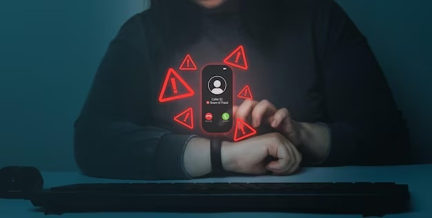

Growing Threat of Cyber Scams in Rural Areas: Safeguarding the CSC Network
As digital connectivity expands to rural areas, Village-Level Entrepreneurs (VLEs) increasingly become targets for cyber scams
Cyber Frauds in Rural Areas
As digital connectivity continues to expand into rural areas, CSC VLEs, who serve as intermediaries between government services and rural communities, are increasingly becoming targets for cyber scams. The VLEs play a crucial role within the CSC e-governance network, ensuring that digital services reach the remotest areas. However, with the increased reliance on digital platforms, there has been a corresponding rise in cyber frauds, which jeopardizes not only the financial stability of VLEs but also the trust within the communities they serve.

A Real-Life Cyber Fraud Incident: Learning from Mistakes
It is important to note that CSC does not ask for any kind of money or financial aid from VLEs to deliver any service.
In a recent incident, a VLE fell victim to a cyber fraud scheme that highlights the growing threat within the CSC network. The VLE received a message from a WhatsApp group, claiming to be an official CSC communication channel. Some group members, posing as top CSC officials, requested money under the pretence of administrative fees for various services. Believing the group to be legitimate, the VLE transferred the funds, only to realize later that it was a scam. Unfortunately, the money was unrecoverable.
This case serves as a cautionary tale, emphasizing the need for VLEs to remain vigilant, verify all financial requests, and maintain a healthy skepticism toward unsolicited messages. CSC SPV consistently urges all VLEs to confirm such requests through official channels before making any financial transactions.
Why Village-Level Entrepreneurs Are Prime Targets
The rise in cyber-fraud became a significant concern as fraudsters find new ways to exploit the digital ecosystem.VLEs are prime targets for cyber scams for several reasons. Firstly, their role as intermediaries between government services and rural communities makes them valuable targets. Cybercriminals know that VLEs often handle significant financial transactions, making them lucrative targets for fraud.Additionally, VLEs may lack comprehensive cybersecurity training, making them more susceptible to phishing attacks, social engineering, and other forms of cyber fraud. The relative isolation of rural areas can also mean that VLEs do not have immediate access to support or resources to help them identify and combat cyber threats.

Common Types of Cyber Scams Affecting VLEs
There are several common types of cyber scams that frequently target VLEs:
1. Phishing Attacks: Fraudulent emails or messages that appear to be from legitimate sources, asking for sensitive information or money.
2. Identify Theft: Impersonation of CSC officials, asking for money and sensitive information.
3. Social Engineering: Manipulative tactics used by scammers to trick VLEs into providing confidential information or making financial transactions.
4. Fake Invoices: Scammers send bogus invoices for services or products that were never requested, hoping the VLE will pay without verifying.
5. Malware and Ransomware: Malicious software that can lock down systems or steal data, often demanding a ransom for its release.
Effective Strategies to Protect VLEs from Cyber Scams
To combat the increasing cases of cyber fraud within the CSC network, it is essential for VLEs and users to remain vigilant and adopt preventive measures.
1. Verify Official Channels: Always verify the authenticity of any communication, especially those received through WhatsApp or social media. If a message appears suspicious or requests money, contact official CSC channelsas CSC does not ask for financial support from VLEs. Avoid engaging with unverified groups or sources.
Follow our official social media channels only:
X (Twitter)
Facebook
Linkedin
Youtube
 Instagram
WhatsApp
Instagram
WhatsApp
2. Strengthen User Authentication: Implement multi-factor authentication (MFA) to add an extra layer of security. MFA requires users to verify their identity with multiple credentials making it more difficult for unauthorized users to gain access to sensitive accounts or data.
3. Regular System Updates: Ensure that all software, apps, and systems within the CSC network are up-to-date. Cybercriminals often exploit vulnerabilities in outdated systems, so regular updates and security patches are essential to protecting against potential attacks.
4. Secure Transactions and Data Encryption: All financial transactions and data exchanges within the CSC network should be encrypted to prevent unauthorized access.
5. Educate Users and VLEs: Cyber education is critical. VLEs should be trained to recognize phishing emails, fraudulent links, and other signs of cyber fraud. Educating the general public about cyber safety practices, such as safeguarding personal information, is equally important.
6. Avoid Sharing Personal Information Publicly: Cybercriminals often harvest information from social media platforms or open forums. VLEs should be cautious about sharing personal details or information about their CSC activities on public platforms.
7. Report Suspicious Activity Immediately: If you suspect that you have encountered fraud or received suspicious communications, report the incident immediately through the helpline details as:
Mail at: support@digitalsevagov.co.in
Call at: VLEs: 96651668xx Citizens: 011-49754923 / 24
The Road Ahead: Securing the CSC Network
As cyber fraud continues to evolve, CSC is committed to implementing advanced technological solutions and raising awareness among VLEs and users. The combination of vigilance, education, and technology will be essential in creating a safer and more secure environment for everyone involved in the CSC network.
By learning from incidents like the WhatsApp scam and adopting the necessary preventive measures, VLEs can protect themselves and the citizens they serve from becoming victims of cyber fraud. Together, we can strengthen the integrity of the CSC e-governance network and ensure that it remains a trusted platform for delivering essential services across India.